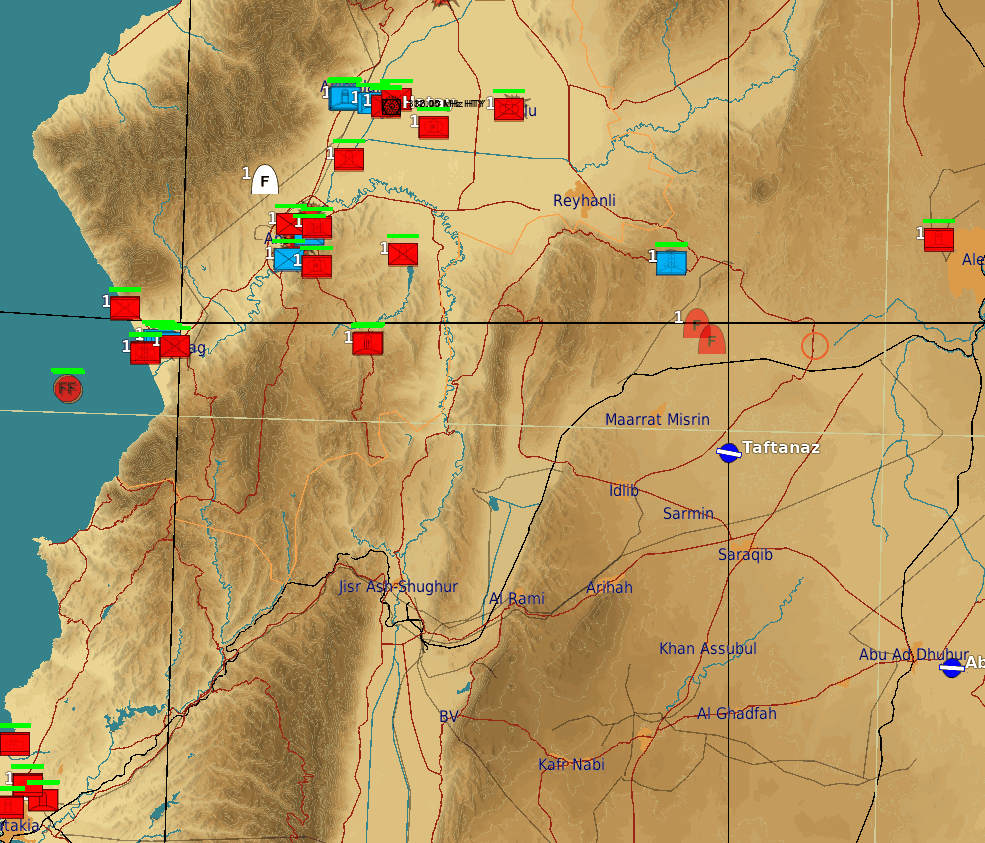

Framework forked and currently being developed to suit Flashpoint Levant needs as the scope grows, adding features and optimizing, noteworthy additions are dynamic spawning system, entity persistence as well quality of life changes as the simplification of the mission sharing system.

As visible on the animation, enemy units spawn and despawn as the player moves closer or away from them, the system was made with performance optimization in mind, as previously, the mission had more than 1500 entities on the entire map, cutting it down to less than 400 at a time, as well granting a significative performance improvement.
The system sets a range for every mission type, some can also vary from asset type inside a same category, so every mission has a bubble around it, which the algorythim will check every 10 seconds if any player is inside the area, and if the mission is active, if yes, the asset then will spawn, and in case the player is leaving, a timer is present so the unit doesn't instantly despawn in case the player is just preparing for another attack run, preventing unnecessary load on the server and on clients.
Some assets like long range air defense systems are have checks based on their radar range, as they are noticeable from a longer range trought sensors present on board of most aircraft, and so, special care was given for them. the algorythim checks all assets inside a SEAD(Anti Aerial defense missions) templates to adquire the maximum ranges, and so its bubble is set to be the same size as it. Some other missions, can also be set to always spawn regardless of the mission not being active or no players being around it.
Other features include persistence between sessions, including damage to individual units inside a mission, as well every destroyed object on the map, this way, player actions are lasting on the battlefield trought the entire campaign. Another changes are also improvements on how players can join a mission, as previously it was deemed hard to approach, as players had to navigate trough multiple arcaic menus and interacting with different systems just to be able to join a mission, which now can be done all within the same interface players can request a brand new mission, giving players a more approachable system.